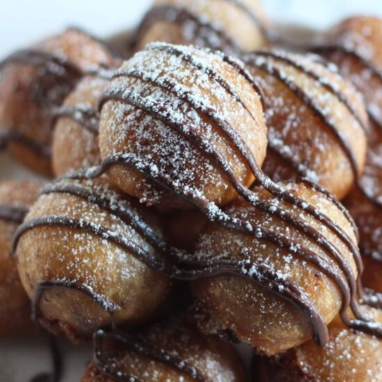

Fried Cookie Dough

Click
here for Fried Cookie Dough Recipe.
What fried recipe list would be complete
without mentioning Fried Cookie Dough?
This recipe is the next logical step in
our quest to find the best fried desserts.
Ingredients
- Prepacked cookie dough
- 1 1/4 cups of all-purpose flour
- 1 tsp baking powder
- 1/4 tsp salt
- 1/4 cup granulated sugar
- 3 cups (frying)/2 tsp vegetable oil
- 1 cup milk
Recipe Steps
- Ball cookie dough and
freeze for 15-30 minutes
- Mix together flour, baking powder,
salt, and sugar in medium bowl
- Add milk/oil and whisk till smooth.
- Add 2 inches of oil to medium
saucepan and heat to 375 degrees F.
- Dip cookie dough balls into batter
and fry until golden brown and remove
to plate.